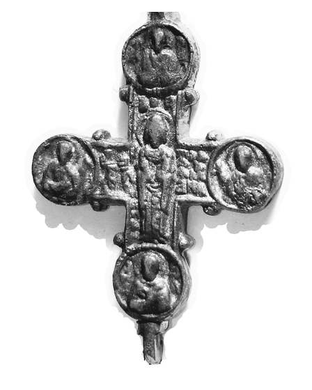

Catalog › CE-0587 · COM2026-141077912
Cruce-encolpion din Tustań (Urici), a doua jumătate a sec. XIII
a doua jumătate a sec. XIII (1251–1300) · Tustań (s. Urici), Regiunea Lviv, Ucraina
double-sided reliquary cross (enkolpion); a doua jumătate a c. XIII (1251–1300); found at Tustań (s. Urici), Regiunea Lviv, Ucraina.


Identificare
- Categorie
- Encolpion bivalv (relicvar)
Iconografie
- Descriere avers
- Cruce cu medalioane pe brațe și pe extremități (fotografie).
Datare și atribuire
- Datare
- a doua jumătate a sec. XIII (1251–1300)
Descoperire
- Localitate
- Tustań (s. Urici)
- Regiune
- Regiunea Lviv
- Țară
- Ucraina
- Coordonate
- 49.1805° N, 23.4080° E
- Precizia locului
- Doar localitatea
Păstrare și referințe
- Bibliografie
- Fotografie: Водник, Wikimedia Commons, licență CC BY-SA 3.0, https://commons.wikimedia.org/?curid=141077912 (accesat 17.10.2026).
- Figura
- Wikimedia Commons, pagina 141077912
- Observații
- Descrierea de pe Commons: „Крестик-энколпион второй половины 13 века, найденный в Тустани (с. Урыч, Львовская область)”. Colecția nu e indicată. Coordonate: ale localității (aproximative), nu date în sursă.
Citare: Corpus Encolpiorum, CE-0587, Cruce-encolpion din Tustań (Urici), a doua jumătate a sec. XIII, --root/piese/COM2026-141077912/ (accesat 2026-10-20).